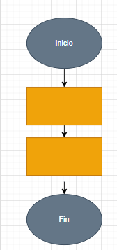

Estructura de control Lineal
Las estructuras de control secuenciales son las más básicas. En este caso, las instrucciones se ejecutan una tras otra en el mismo orden en que están escritas.

¿Dónde se ocupa?
Los sistemas de control lineal son fundamentales en la ingeniería y la tecnología modernas.

¿Para qué se ocupan?
1.- Definir un flujo lógico de instrucciones: Garantizan que las acciones se realicen en un orden específico, como leer datos, realizar cálculos y mostrar resultados.
2.- Evitar ambigüedad en el proceso: Cada paso se ejecuta tal como está definido, lo que es fundamental para tareas que requieren precisión y previsibilidad.
Ventajas
Las estructuras de control lineal son fáciles de entender y de implementar, lo que las hace ideales para principiantes en programación.

Ejemplo
Un ejemplo clásico de control lineal es un programa que solicita al usuario ingresar dos números y luego muestra su suma.